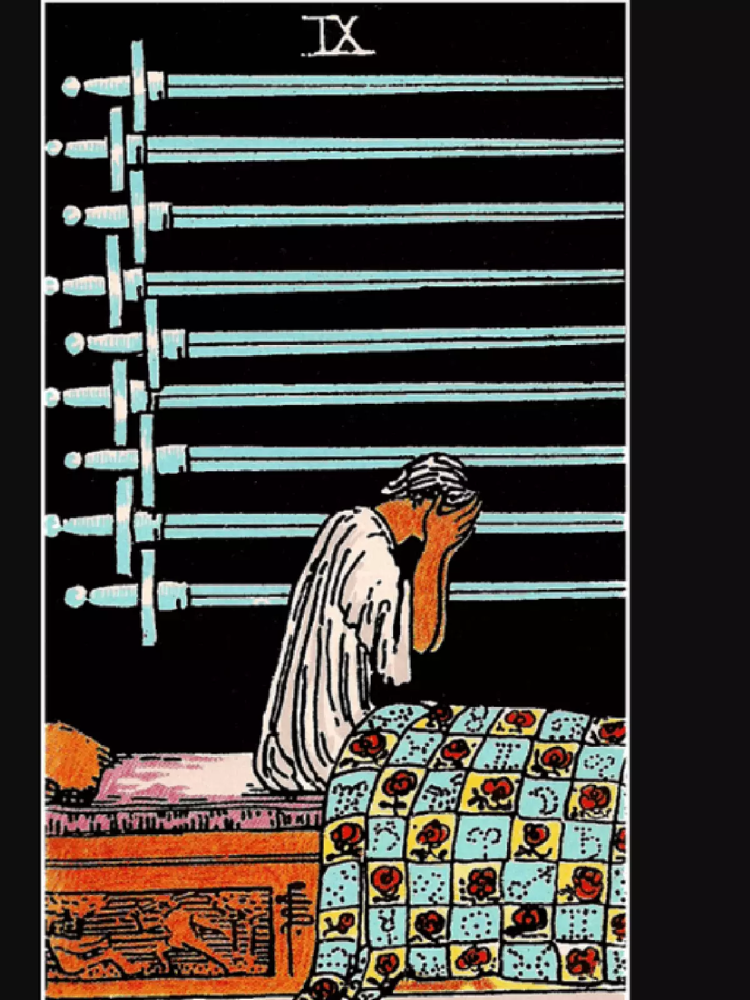

O Nove de Espadas é uma carta do Tarô que simboliza a traição, a decepção e a dor emocional. Ele representa a necessidade de enfrentar verdades difíceis e a importância de superar sentimentos de culpa ou arrependimento. O Nove de Espadas também pode indicar um período de transição, onde a pessoa precisa deixar para trás algo que não é mais saudável para seu bem-estar.